Desarrollo web orientado a API's y Microservicios
Un enfoque moderno
Clase 2
Diego Acuña Rozas
Ing. Civil en Informática - UTFSM
diego.acuna@mailbox.org
Clase de hoy
Vamos a aprender a desarrollar API's (backend). La idea es introducir los conceptos claves de una API REST de manera práctica.
- API REST 101
- Rails
- API REST con Rails: simple-wordpress
-
Stack MEANMongoDBMEAN
API REST con MEAN: simple-wordpress- Comentarios finales
REST 101
- REST: Representational State Transfer
- Stateless
- Client-Server
-
Utiliza HTTP para comunicación
- Hereda sus herramientas y propiedades
- Verbos HTTP: GET, POST, PUT, DELETE
- Error Codes: 2xx, 3xx, 4xx, 5xx
- Podríamos decir que no es tan complejo como SOAP, RPC, etc.
Ejemplo REST
API para manejar usuarios
Llamamos a la url GET http://ejemplo.com/api/usuarios/1. Veamos cada parte de la llamada.
- http:// Estamos utilizando el protocolo HTTP
- ejemplo.com Dominio de nuestra app
- /api Es práctica común dejar una sección dedicada de la url para especificar que se está llamando a una api
- /usuarios REST Collection
- /1 REST Resource
Estamos obteniendo el resource 1 de la collection usuarios.
Ejemplo REST
¿Qué responde el servidor?
REQUEST:
GET /api/usuarios/1 HTTP/1.1
Host: ejemplo.com
User-Agent: Mozilla/5.0
HTTP/1.1 200 OK
Server: Apache/2.4.7 (Ubuntu)
Content-Length: 30
Content-Type: application/json
{"id": 1, "nombre": "Diego A"}
Ejemplo REST
¿Qué responde el servidor?
RESPONSE:
HTTP/1.1 200 OK
Server: Apache/2.4.7 (Ubuntu)
Content-Length: 30
Content-Type: application/json
{"id": 1, "nombre": "Diego A"}
- Notar el Response CODE: 200 (OK)
- Notar el Content-Type (application/json). Nos indica el formato de datos que estamos utilizando.
Ruby on Rails (RoR)

- Full Stack web framework
- Lenguaje Ruby (?)
- Primera versión el año 2004
-
Filosofía Rails:
- Convention Over Configuration
- Don't Repeat Yourself
- The menu is omakase
- Beautiful code
Rails es un framework MVC
Modelo - Vista - Controlador
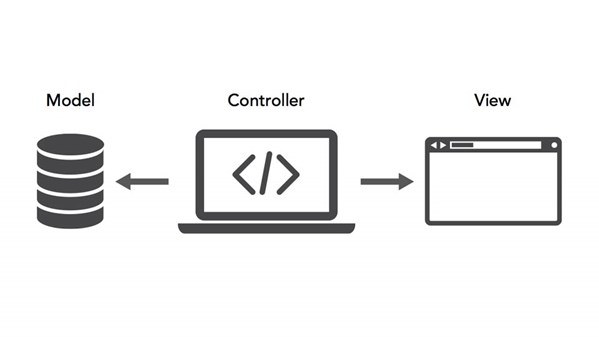Rails es un framework MVC
Por defecto, rails no está pensado para desarrollar una API REST. Su configuración inicial está pensada para que exista una vista que renderiza código html con la interfaz gráfica de nuestra aplicación.
Podemos configurar rails para que no utilice el concepto tradicional de vistas sino que retorne solo la información en forma de JSON o XML que necesitamos. Pero para esto, como se mencionó, tenemos que configurar ciertos parámetros del framework.
Rails en la práctica
-
Creando una nueva aplicación:
rails new simple-wordpress cd simple-wordpress -
Directorios y archivos importantes:
- app/: código fuente de la app (model, controller, etc.)
- config/: configuración de la app (DB, mailing, etc.)
- db/: esquema de la base de datos y migraciones
- Gemfile: dependencias de la app (gemas en la jerga de ruby)
- log/: log de la app según environment
- public/: archivos "visibles" por el exterior (servidos directamente)
Rails en la práctica
¿Qué vamos a hacer?
La idea es construir una API REST (solo el backend) de un sistema de blog simple. Le vamos a llamar simple-wordpress. La forma de construirlo seguirá los principios de rails.
- Se deben poder publicar entradas en el blog: Un usuario deberá poder publicar entradas al blog mediante una petición POST. Cada entrada tendrá un título, fecha de publicación, autor y contenido.
- Se debe poder listar las entradas
- Se deben poder eliminar entradas
Simple-Wordpress API
Comencemos por el modelo
- Conociendo los generadores de rails
rails generate model Post title:string content:text autor:string
- Rails automáticamente genera una migración la que permite tener versioning de nuestro esquema de manera sencilla. Revisar directorio: db/.
- Notar el t.timestamps: rails automáticamente agrega atributos created_at y updated_at a nuestro modelo. Estos atributos son manejados de manera transparente por el framework.
Simple-Wordpress - Controlador
- Para aplicar la migración anterior debemos ejecutar:
rake db:migrate
- Tenemos el modelo y nuestra tabla en la base de datos. Veamos el controlador.
rails generate scaffold_controller Post
Running via Spring preloader in process 97935
create app/controllers/posts_controller.rb
invoke erb
create app/views/posts
create app/views/posts/index.html.erb
...
invoke test_unit
create test/controllers/posts_controller_test.rb
invoke helper
create app/helpers/posts_helper.rb
invoke test_unit
invoke jbuilder
create app/views/posts/index.json.jbuilder
...
Simple-Wordpress: Controlador
- Rails automáticamente crea distintos archivos que nos ayudarán en el desarrollo de nuestra app.
- El controlador: con acciones index, show, new, edit, create, update y destroy. ¿Cuáles de estos métodos no son necesarios en nuestra API?
-
Rails creó dos tipos de vistas:
- Extensión .html.erb: aplicación tradicional donde el servidor devuelve un fragmentos de html renderizado.
- Extensión .json.jbuilder: Corresponden a lo que usaríamos en una API REST. Podemos definir la estructura del json que devolverá la API.
Librería clave: jbuilder ( https://github.com/rails/jbuilder)
Simple-Wordpress: publicar entradas
Recordemos nuestra primera historia de usuario: debemos ser capaces de publicar entradas en nuestro blog. Veamos nuestro controlador:
...
# POST /posts
# POST /posts.json
def create
@post = Post.new(post_params)
respond_to do |format|
if @post.save
format.html { redirect_to @post, notice: 'Post was successfully created.' }
format.json { render :show, status: :created, location: @post }
else
format.html { render :new }
format.json { render json: @post.errors, status: :unprocessable_entity }
end
end
end
...
Simple-Wordpress: publicar entradas
Antes de continuar realicemos una limpieza del código auto-generado por rails:
...
# POST /posts
def create
@post = Post.new(post_params)
if @post.save
render :show, status: :created, location: @post
else
render json: @post.errors, status: :unprocessable_entity
end
end
...
y aprovechemos de eliminar las vistas .html.erb innecesarias. ¿De qué se trata el Post.new(post_params)?
Simple-Wordpress: publicar entradas
Rails y sus Strong Parameters
Cuando recibimos datos desde internet nunca debemos confiar de su contenido ni de su origen. Por esto realizamos validaciones a nuestros datos. Además, rails nos permite filtrar que datos desde la petición vamos a utilizar.
# Never trust parameters from the scary internet, only allow the white list through.
def post_params
params.fetch(:post, {}).permit(:title, :content, :autor)
end
Solamente permitiremos parámetros de nombre "title", "content" y "autor". De eso se trata el Post.new(post_params).
Simple-Wordpress: publicar entradas
Veamos el flujo de nuestro método create:
# POST /posts
def create
@post = Post.new(post_params)
if @post.save
render :show, status: :created, location: @post
else
render json: @post.errors, status: :unprocessable_entity
end
end
- Si la llamada @post.save retorna true entonces se hace un "render" de la acción "show".
- Si @post.save falla entonces se retorna un arreglo de errores (@post.errors).
- Notar que siempre generamos un "status" HTTP adecuado.
Simple-Wordpress: publicar entradas
Revisemos el método show puesto que al parecer es necesario dado que se utilizará en una llamada correcta de create.
# GET /posts/1
def show
end
¿Qué hace este código? ¿Nada? Tratemos de comprender que está haciendo la aplicación. Para comenzar probemos nuestra API (por ahora solo tenemos el método create!)
Simple-Wordpress
Rails: iniciando nuestra aplicación
- Podemos iniciar nuestra aplicación rails ejecutando:
rails server
=> Booting WEBrick
=> Rails 4.2.5 application starting in development on http://localhost:3000
=> Run `rails server -h` for more startup options
=> Ctrl-C to shutdown server
[2016-08-13 00:33:50] INFO WEBrick 1.3.1
[2016-08-13 00:33:50] INFO ruby 2.2.0 (2014-12-25) [x86_64-darwin15]
[2016-08-13 00:33:50] INFO WEBrick::HTTPServer#start: pid=98585 port=3000
- Por defecto, rails posee un servidor integrado (WEBrick) el cual corre en el puerto 3000 con nuestra aplicación.
Simple-Wordpress
Rails: iniciando nuestra aplicación
Si nos dirigimos en nuestro navegador a http://localhost:3000 veremos algo como:
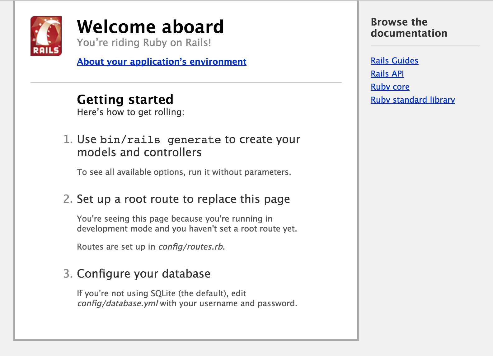Simple-Wordpress
Rails: iniciando nuestra aplicación
Esto es útil en una aplicación tradicional. Nosotros estamos construyendo una API. Para probar nuestra API necesitaremos un cliente REST.
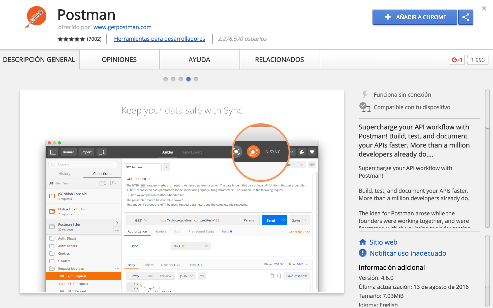Simple-Wordpress: Probando la API
Hagamos una llamada POST a nuestra API en /posts (lo que se traduce al método create en nuestro controlador.
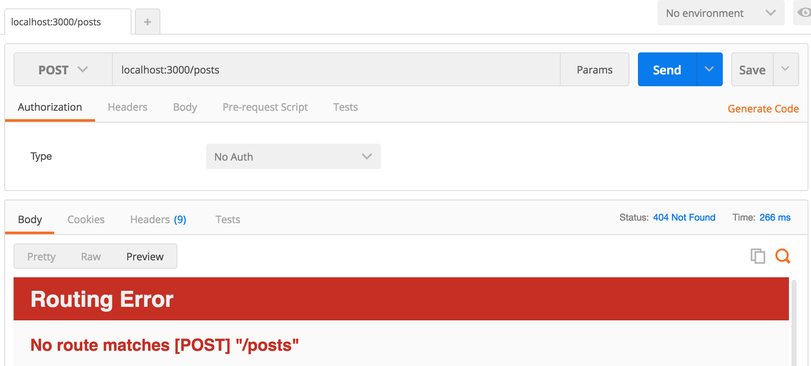Error 404: la ruta no existe! Arreglemos el error...
Simple-Wordpress: Routing
Rails utiliza un archivo de routing que indica que url's existen en la aplicación y que métodos se ejecutan para cada url: el archivo config/routes.rb.
- Agreguemos al routing las acciones de nuestro controlador:
Rails.application.routes.draw do
resources :posts
end
- Ese código basta para que rails cree automáticamente cada url para nuestro PostController en un modo "RESTful compatible". Evidentemente, para que funcione, debe exister el controlador PostController.
Simple-Wordpress: Probando la API
Probemos nuevamente:
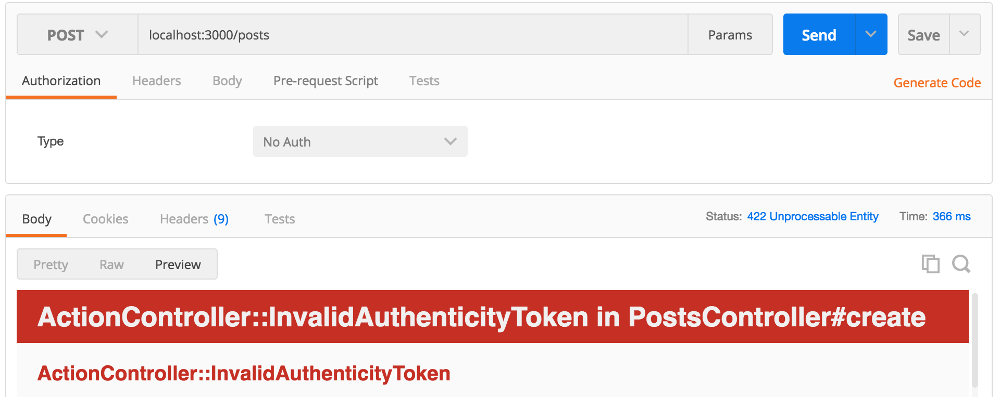???
Simple-Wordpress: Probando la API
Rails utiliza un mecanismo anti-hacking para evitar un ataque muy popular denominado CSRF attack. Esta fuera del contexto del curso discutir este ataque pero debemos resolver el error en nuestra aplicación.
- El error se produce porque rails al no poder verificar la protección CSRF lanza una exception lo que explica el error que estamos viendo.
- Como estamos desarrollando una API no nos interesa que rails despliegue un error del tipo exception. Podemos configurar este comportamiento en el archivo app/controllers/application_controller.rb.
Simple-Wordpress: Probando la API
Reconfiguremos nuestra aplicación para solucionar el error:
class ApplicationController < ActionController::Base
# Prevent CSRF attacks by raising an exception.
# For APIs, you may want to use :null_session instead.
protect_from_forgery with: :exception
end
Debería ser:
class ApplicationController < ActionController::Base
protect_from_forgery with: :null_session
end
Simple-Wordpress: Probando la API
Probemos nuevamente:
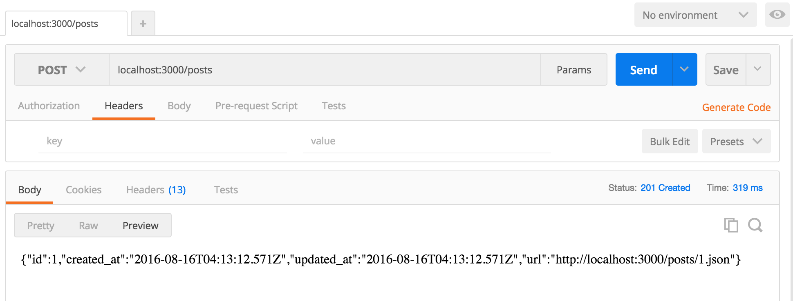Por fin! se creó el POST correctamente. Pero... ¡no le pasamos ningún dato del post! Necesitamos realizar una validación antes de crear el post...
Simple-Wordpress: Validación
Rails permite de manera muy sencilla validar los datos antes de crear una instancia de nuestros modelos. Para esto, agregamos reglas de validación a nuestro modelo. Veamos un ejemplo:
Archivo: app/models/post.rb
class Post < ActiveRecord::Base
validates :title, presence: true
validates :content, presence: true
validates :autor, presence: true
end
Con esto, le estamos diciendo a rails que el title, content y autor deben estar de manera obligatoria al crear un nuevo post.
Simple-Wordpress: Validación
Existen muchas reglas de validación distintas en rails. Por ejemplo:
- Presence: la acabamos de utilizar en nuestro modelo.
- Length: valida que el dato ingresado tenga como largo un valor especificado (o rango).
- Numericality: valida que el dato ingresado sea numérico.
- Uniqueness: valida que el dato ingresado sea único antes de ser ingresado en la DB.
- etc.
Por ahora, para simplificar el código, en nuestro modelo solo utilizaremos presence.
Simple-Wordpress: Probando la API
Probemos nuevamente:
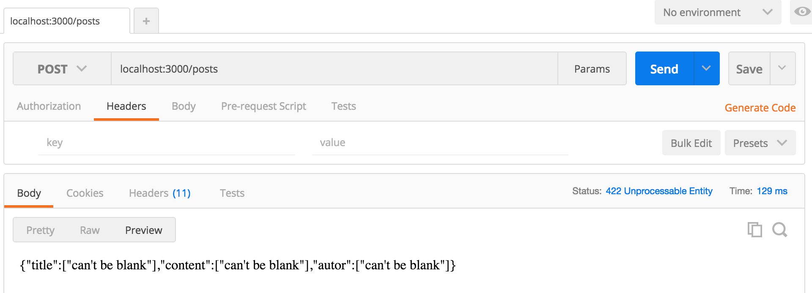Perfecto! La validación está funcionando de manera correcta. Se pueden cambiar el idioma de los mensajes de validación. Rails posee la funcionalidad de i18n (internationalization). Para más información ver http://guides.rubyonrails.org/i18n.html
Simple-Wordpress: Probando la API
Probemos nuevamente con datos reales:
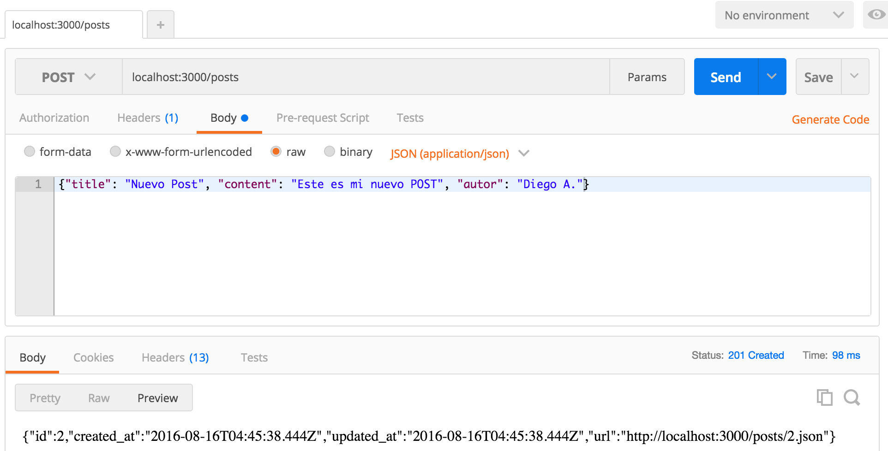Todo OK! Notar que el "Content-Type" de nuestra petición debe ser "application/json" sino rails no considerará nuestros datos como válidos.
Simple-Wordpress: Probando la API
Ahora que tenemos datos reales insertados en nuestra DB, veamos lo que nos retorna nuestra API al llamar al método index (GET /posts). Si vemos el código:
def index
@posts = Post.all
end
Es bastante auto-explicativo. Se está llamando al método all del modelo Post. Este método existe en todos los modelos de rails (que descienden de ActiveRecord::Base) y trae todos los registros de la base de datos para ese modelo.
Además, asigna ese listado de registros a la variable @post (llamada variable de instancia en ruby, en oposición a una variable local).
Simple-Wordpress: Probando la API
Veamos que response la API a un GET en /posts:
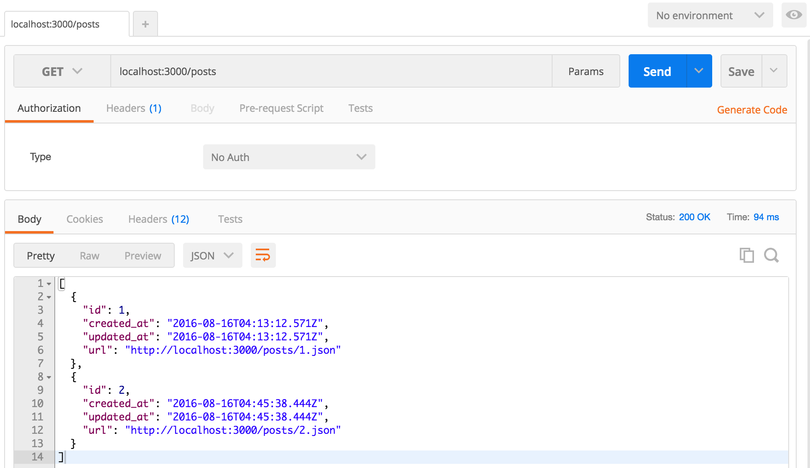Simple-Wordpress: Probando la API
Se ve bien. Tenemos 2 datos, pero no vemos la información del título, contenido ni el autor! El archivo que se encarga de mostrar ese json se encuentra en app/views/posts/index.json.builder :
json.array! @posts, partial: 'posts/post', as: :post
Nos esta diciendo que renderizará un arreglo json (json.array!) proveniente desde la variable @post (que viene del controlador). Pero, cada elemento del arreglo lo renderizará utilizando una vista partial ubicada en app/views/posts/_post.json.jbuilder (por defecto los partials se reconocen porque en el nombre del archivo se utiliza un '_' al comienzo).
Simple-Wordpress: Probando la API
Archivo app/views/posts/_post.json.builder:
json.extract! post, :id, :created_at, :updated_at
json.url post_url(post, format: :json)
json.extract! extrae ciertos atributos desde la variable post (¿recuerdan el as: :post en el index.json.jbuilder?). Por ahora solo extrae el id y los datos de timestamp. Agreguemos el título, contenido y el autor:
json.extract! post, :id, :title, :content, :autor, :created_at, :updated_at
json.url post_url post
Además, podemos borrar el formato en el json.url ya que siempre será json. PREGUNTA: ¿Para qué sirve el json.url?
Simple-Wordpress: Probando la API
GET /posts:
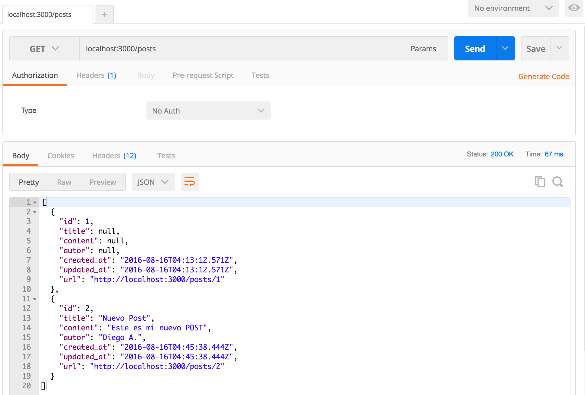Simple-Wordpress: Probando la API
Veamos si podemos ver la información de solamente 1 post. Por ejemplo: GET /posts/2 (aquí cobra sentido el json.url y lo que devuelve el GET /posts):
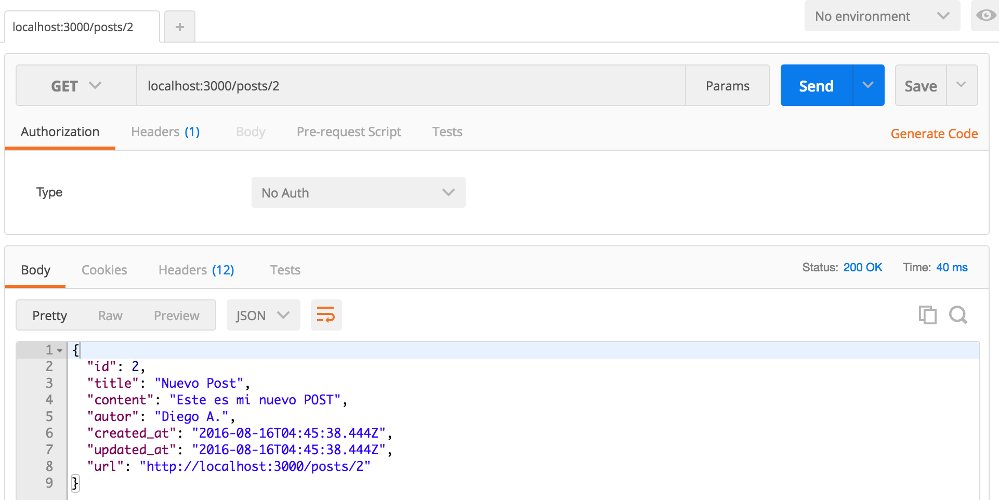Simple-Wordpress: Probando la API
Perfecto, funcionó y ni siquiera tuvimos que cambiar el código. Esta es la ventaja de rails, solo tienes que configurar el framework una sola vez y luego el desarrollo es muy rápido. Para referencia, el código que permite esto es el método show (y set_post) de nuestro controlador y la vista show.json.jbuilder que genera el output json.
Método show:
# GET /posts/1
def show
end
json.partial! "posts/post", post: @post
Simple-Wordpress: Eliminando registros
Solo nos queda poder eliminar registros desde nuestra API. Para esto, rails amablemente ha creado para nosotros el método destroy en nuestro controlador:
# DELETE /posts/1
# DELETE /posts/1.json
def destroy
@post.destroy
respond_to do |format|
format.html { redirect_to posts_url, notice: 'Post was successfully destroyed.' }
format.json { head :no_content }
end
end
Modifiquémoslo según lo que ya sabemos:
# DELETE /posts/1
def destroy
@post.destroy
head :no_content
end
Simple-Wordpress: Probando la API
Veamos si funciona:
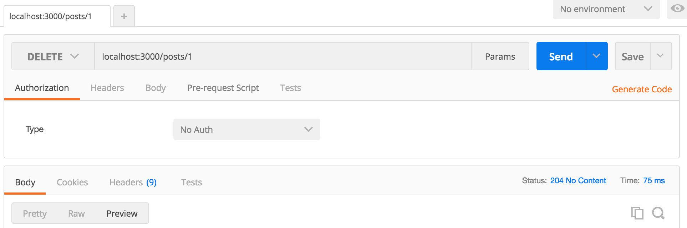Notar el HTTP code de respuesta: 204 No Content. Es estándar para peticiones DELETE. Verifiquemos que efectivamente se eliminó...
Simple-Wordpress: Probando la API
GET a /posts para ver todos los post
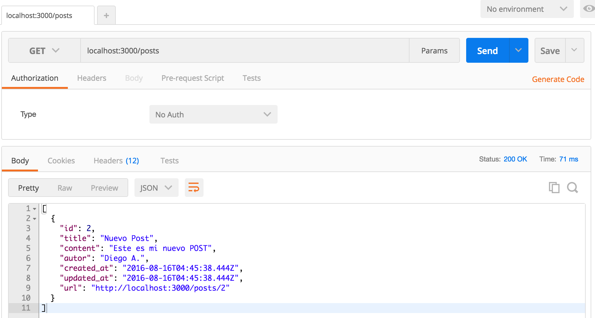Simple-Wordpress
TAREA: modifiquen el controlador para poder ejecutar una actualización de un post
Para esto utilizaremos el método PUT de HTTP (en Postman). ¿Qué método del controlador debemos modificar y adaptar?
Simple-Wordpress
TAREA2: Crear un sistema de comentarios para el blog
Deberán investigar sobre relaciones en rails y aplicar lo que ya hemos visto.